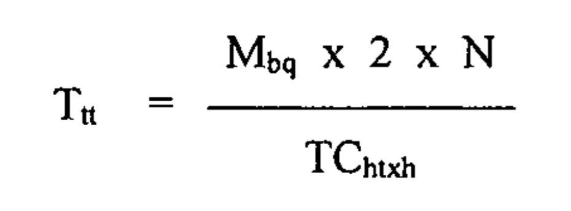
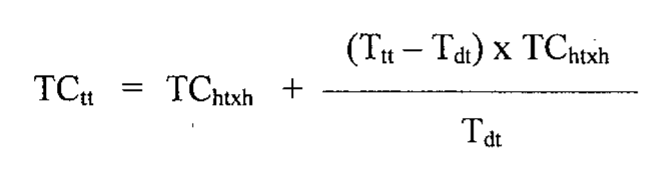

Chế độ đối với người lao động không đủ điều kiện hưởng lương hưu và chưa đủ tuổi hưởng trợ cấp hưu trí xã hội theo Luật BHXH và Nghị định 158/2025/NĐ-CP có hiệu lực từ ngày 01/07/2025
Theo quy định tại điều 23 của Luật Bảo hiểm xã hội số: 41/2024/QH15 có hiệu lực từ ngày 01/07/2025 thì:
1. Công dân Việt Nam đủ tuổi nghỉ hưu có thời gian đóng bảo hiểm xã hội nhưng không đủ điều kiện hưởng lương hưu theo quy định của pháp luật và chưa đủ điều kiện hưởng trợ cấp hưu trí xã hội theo quy định tại Điều 21 của Luật này, nếu không hưởng bảo hiểm xã hội một lần và không bảo lưu mà có yêu cầu thì được hưởng trợ cấp hằng tháng từ chính khoản đóng của mình theo quy định tại khoản 2 Điều này.
Trình tự, thủ tục thực hiện chế độ đối với người lao động không đủ điều kiện hưởng lương hưu và chưa đủ tuổi hưởng trợ cấp hưu trí xã hội
1. Đối tượng quy định tại khoản 1 Điều 23 của Luật này gửi hồ sơ đến cơ quan bảo hiểm xã hội. Hồ sơ bao gồm:
a) Sổ bảo hiểm xã hội;
b) Văn bản đề nghị hưởng trợ cấp hằng tháng.
2. Trong thời hạn 05 ngày làm việc kể từ ngày nhận đủ hồ sơ theo quy định tại khoản 1 Điều này, cơ quan bảo hiểm xã hội có trách nhiệm giải quyết; trường hợp không giải quyết thì phải trả lời bằng văn bản và nêu rõ lý do.
(Theo quy định tại điều 24 của Luật BHXH)
2. Thời gian hưởng, mức hưởng trợ cấp hằng tháng được xác định căn cứ vào thời gian đóng, căn cứ đóng bảo hiểm xã hội của người lao động.
3. Mức trợ cấp hằng tháng thấp nhất bằng mức trợ cấp hưu trí xã hội hằng tháng quy định tại khoản 1 Điều 22 của Luật này.
Trường hợp tổng số tiền tính theo thời gian đóng, căn cứ đóng bảo hiểm xã hội của người lao động cao hơn số tiền tính mức trợ cấp hằng tháng bằng mức trợ cấp hưu trí xã hội tại thời điểm giải quyết hưởng cho khoảng thời gian từ khi đủ tuổi nghỉ hưu đến khi đủ tuổi hưởng trợ cấp hưu trí xã hội thì người lao động được tính để hưởng trợ cấp hằng tháng với mức cao hơn.
Trường hợp tổng số tiền tính theo thời gian đóng, căn cứ đóng bảo hiểm xã hội không đủ để người lao động hưởng trợ cấp hằng tháng cho đến khi đủ tuổi hưởng trợ cấp hưu trí xã hội, nếu người lao động có nguyện vọng thì được đóng một lần cho phần còn thiếu để hưởng cho đến khi đủ tuổi hưởng trợ cấp hưu trí xã hội.
4. Mức trợ cấp hằng tháng quy định tại khoản 3 Điều này được áp dụng việc điều chỉnh theo quy định tại Điều 67 của Luật này.
5. Trường hợp người đang hưởng trợ cấp hằng tháng chết thì thân nhân được hưởng trợ cấp một lần cho những tháng chưa nhận và được hưởng một lần trợ cấp mai táng nếu đủ điều kiện quy định tại điểm a khoản 1 Điều 85 hoặc điểm a khoản 1 Điều 109 của Luật này.
6. Người đang trong thời gian hưởng trợ cấp hằng tháng thì được ngân sách nhà nước đóng bảo hiểm y tế.
7. Chính phủ quy định chi tiết Điều này.
Hiện nay, Chính phủ quy định chi tiết điều 23 của Luật Bảo hiểm xã hội tại Chương IV Nghị định 158/2025/NĐ-CP có hiệu lực từ ngày 01/07/2025 như sau:
Chương IV
CHẾ ĐỘ ĐỐI VỚI NGƯỜI LAO ĐỘNG KHÔNG ĐỦ ĐIỀU KIỆN HƯỞNG LƯƠNG HƯU VÀ CHƯA ĐỦ TUỔI HƯỞNG TRỢ CẤP HƯU TRÍ XÃ HỘI
Chế độ đối với người lao động không đủ điều kiện hưởng lương hưu và chưa đủ tuổi hưởng trợ cấp hưu trí xã hội được thực hiện theo quy định tại Điều 23 và Điều 24 của Luật Bảo hiểm xã hội và được quy định chi tiết như sau:
Điều 22. Đối tượng và điều kiện hưởng
1. Đối tượng áp dụng là người lao động theo quy định tại khoản 1 Điều 2 của Luật Bảo hiểm xã hội đủ tuổi nghỉ hưu có thời gian đóng bảo hiểm xã hội nhưng không đủ điều kiện hưởng lương hưu theo quy định của pháp luật và chưa đủ điều kiện hưởng trợ cấp hưu trí xã hội theo quy định tại Điều 21 của Luật Bảo hiểm xã hội.
2. Điều kiện hưởng là đối tượng quy định tại khoản 1 Điều này không hưởng bảo hiểm xã hội một lần, không bảo lưu thời gian đóng bảo hiểm xã hội và có đề nghị được hưởng trợ cấp hằng tháng.
Điều 23. Thời gian hưởng trợ cấp hằng tháng
1. Thời gian hưởng trợ cấp hằng tháng được xác định căn cứ vào thời gian đóng, căn cứ đóng bảo hiểm xã hội của người lao động và được tính theo công thức sau:

Trong đó:
a) Ttt: thời gian hưởng trợ cấp hằng tháng (tháng);
b) Mbq: Mức bình quân tiền lương làm căn cứ đóng bảo hiểm xã hội bắt buộc được tính theo quy định tại Điều 72 của Luật Bảo hiểm xã hội và Điều 15 của Nghị định này đối với người tham gia bảo hiểm xã hội bắt buộc hoặc mức bình quân thu nhập và tiền lương làm căn cứ đóng bảo hiểm xã hội được tính theo quy định tại khoản 5 Điều 17 của Nghị định này đối với người vừa có thời gian đóng bảo hiểm xã hội tự nguyện vừa có thời gian đóng bảo hiểm xã hội bắt buộc (đồng/tháng);
c) N: số năm đóng bảo hiểm xã hội. Trường hợp thời gian đóng bảo hiểm xã hội có tháng lẻ từ 01 tháng đến 06 tháng được tính là nửa năm, từ 07 tháng đến 11 tháng được tính là một năm;
d) TChtxh: Mức trợ cấp hưu trí xã hội hằng tháng được tính tại thời điểm giải quyết chế độ trợ cấp hằng tháng (đồng/tháng).
Trường hợp tính theo công thức nêu trên có thời gian lẻ chưa đủ tháng thì được tính làm tròn thành 01 tháng.
2. Thời gian hưởng trợ cấp hằng tháng được xác định trong khoảng thời gian từ tháng người lao động có văn bản đề nghị khi đã đủ tuổi nghỉ hưu đến khi đủ tuổi hưởng trợ cấp hưu trí xã hội theo quy định của pháp luật tại thời điểm giải quyết chế độ. Trường hợp thời gian hưởng trợ cấp hằng tháng tính theo công thức quy định tại khoản 1 Điều này vượt quá thời gian đến khi đủ tuổi hưởng trợ cấp hưu trí xã hội thì người lao động được tính để hưởng mức trợ cấp hằng tháng với mức cao hơn theo quy định tại khoản 2 Điều 24 của Nghị định này.
3. Trường hợp thời gian hưởng trợ cấp hằng tháng tính theo công thức quy định tại khoản 1 Điều này không đủ để người lao động hưởng trợ cấp hằng tháng cho đến khi đủ tuổi hưởng trợ cấp hưu trí xã hội, nếu người lao động có nguyện vọng thì được đóng một lần cho phần còn thiếu để hưởng cho đến khi đủ tuổi hưởng trợ cấp hưu trí xã hội. Số tiền đóng một lần cho phần còn thiếu để hưởng cho đến khi đủ tuổi hưởng trợ cấp hưu trí xã hội được tính theo công thức sau:
STmlct = (Tdt - Ttt) x TChtxh
Trong đó:
a) STmlct: Số tiền đóng một lần cho phần còn thiếu (đồng);
b) Tdt Thời gian từ tháng người lao động có văn bản đề nghị đến khi đủ tuổi hưởng trợ cấp hưu trí xã hội (tháng);
c) Ttt: Thời gian hưởng trợ cấp hằng tháng tính theo công thức quy định tại khoản 1 Điều này (tháng);
d) TChtxh: Mức trợ cấp hưu trí xã hội hằng tháng được tính tại thời điểm giải quyết chế độ trợ cấp hằng tháng (đồng/tháng). Trường hợp người lao động không thực hiện đóng một lần cho phần còn thiếu ngay tại thời điểm giải quyết hưởng trợ cấp hằng tháng thì mức trợ cấp hưu trí xã hội hằng tháng được tính tại thời điểm người lao động đóng một lần cho phần còn thiếu.
4. Trường hợp trong thời gian người lao động hưởng trợ cấp hằng tháng mà có thay đổi về chính sách hoặc điều kiện của người lao động làm thay đổi về tuổi hưởng trợ cấp hưu trí xã hội hằng tháng thì tiếp tục hưởng trợ cấp hằng tháng theo thời hạn đã được giải quyết. Trường hợp hết thời hạn hưởng trợ cấp hằng tháng đã được giải quyết người lao động chưa đủ tuổi hưởng trợ cấp hưu trí xã hội mà người lao động có nguyện vọng được đóng một lần cho phần còn thiếu để hưởng cho đến khi đủ tuổi hưởng trợ cấp hưu trí xã hội thì thực hiện theo quy định tại khoản 3 Điều này.
Điều 24. Mức trợ cấp hằng tháng
1. Mức trợ cấp hằng tháng được tính bằng mức trợ cấp hưu trí xã hội hằng tháng quy định tại khoản 1 Điều 22 của Luật Bảo hiểm xã hội tại thời điểm giải quyết hưởng trợ cấp hằng tháng.
2. Trường hợp thời gian hưởng trợ cấp hằng tháng tính theo công thức nêu tại khoản 1 Điều 23 của Nghị định này vượt quá thời gian đến khi đủ tuổi hưởng trợ cấp hưu trí xã hội thì người lao động được tính để hưởng mức trợ cấp hằng tháng với mức cao hơn mức trợ cấp hưu trí xã hội tại thời điểm giải quyết, mức trợ cấp hằng tháng cao hơn mức trợ cấp hưu trí xã hội được xác định theo công thức sau:

Trong đó:
a) TCtt: mức trợ cấp hằng tháng cao hơn mức trợ cấp hưu trí xã hội tại thời điểm giải quyết (đồng/tháng);
b) TChtxh: Mức trợ cấp hưu trí xã hội hằng tháng được tính tại thời điểm giải quyết chế độ trợ cấp hằng tháng (đồng/tháng);
c) Ttt: Thời gian hưởng trợ cấp hằng tháng tính theo công thức quy định tại khoản 3 Điều này (tháng);
d) Tdt: Thời gian từ tháng người lao động có văn bản đề nghị đến khi đủ tuổi hưởng trợ cấp hưu trí xã hội (tháng).
3. Mức trợ cấp hằng tháng được điều chỉnh khi Chính phủ điều chỉnh lương hưu theo quy định tại Điều 67 của Luật Bảo hiểm xã hội.
4. Văn bản đề nghị hưởng trợ cấp hằng tháng của người lao động thực hiện theo mẫu do Bảo hiểm xã hội Việt Nam ban hành.
Điều 25. Chế độ đối với thân nhân người đang hưởng trợ cấp hằng tháng chết trước khi hết thời hạn hưởng trợ cấp
1. Người lao động đang hưởng trợ cấp hằng tháng chết khi chưa hết thời hạn hưởng trợ cấp hằng tháng thì thân nhân được hưởng trợ cấp một lần cho những tháng người lao động chưa nhận. Mức trợ cấp một lần được tính bằng số tháng chưa nhận nhân với mức trợ cấp hằng tháng người lao động đang hưởng trước khi chết.
2. Người lao động đang hưởng trợ cấp hằng tháng thuộc một trong các trường hợp dưới đây khi chết thì thân nhân được hưởng một lần trợ cấp mai táng quy định tại khoản 2 Điều 85 của Luật Bảo hiểm xã hội:
a) Có thời gian đóng bảo hiểm xã hội bắt buộc từ đủ 12 tháng trở lên;
b) Có thời gian đóng bảo hiểm xã hội tự nguyện từ đủ 60 tháng trở lên;
c) Có tổng thời gian đóng bảo hiểm xã hội tự nguyện và bảo hiểm xã hội bắt buộc từ đủ 60 tháng trở lên nếu thời gian đóng bảo hiểm xã hội bắt buộc hoặc thời gian đóng bảo hiểm xã hội tự nguyện không đáp ứng điều kiện quy định tại điểm a và điểm b khoản này.
3. Hồ sơ đề nghị hưởng trợ cấp một lần và trợ cấp mai táng quy định tại khoản 1 và khoản 2 Điều này bao gồm:
a) Bản sao giấy chứng tử hoặc trích lục khai tử hoặc bản sao giấy báo tử hoặc bản sao quyết định của Tòa án tuyên bố là đã chết;
b) Tờ khai của thân nhân theo mẫu do Bảo hiểm xã hội Việt Nam ban hành.
4. Giải quyết hưởng trợ cấp một lần và trợ cấp mai táng quy định tại khoản 1 và khoản 2 Điều này như sau:
a) Trong thời hạn 90 ngày kể từ ngày người hưởng trợ cấp hằng tháng chết thì thân nhân nộp hồ sơ quy định tại khoản 3 Điều này cho cơ quan bảo hiểm xã hội;
b) Trong thời hạn 10 ngày làm việc kể từ ngày nhận đủ hồ sơ theo quy định, cơ quan bảo hiểm xã hội có trách nhiệm giải quyết; trường hợp không giải quyết thì phải trả lời bằng văn bản và nêu rõ lý do.